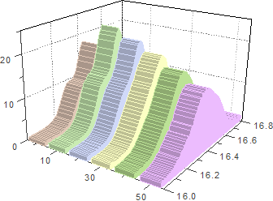
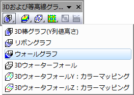

3D ウォールグラフ
Wall-Graph
- 
要求されるデータ
通常複数のY列（あるいは、その部分領域）を選択します。 (1つのY列を選択すると、通常の2D面積グラフが3次元化されたウォール形式のグラフ表現になります。) 関連付けられたX列がある場合はそれを使用し、そうでない場合は、Y列または行番号のサンプリング間隔が使用されます。
グラフ作成
メインメニューから、 を選択します。
または、
「3Dおよび等高線グラフ」ツールバーの「ウォールグラフ」ボタン をクリックします。
- 
テンプレート
- glWalls.OTP (OpenGL)
- WALLS.OTP
(Originのプログラムフォルダにインストールされています。)
ノート
- 各データポイントのY値が、ウォールの高さとして表されます。 すべてのウォール幅は固定されていて、それぞれZ軸にワークシート列の名前がラベルされます。
- Origin 2018以降では、作図の詳細パターンタブ(フォーマット: 作図の詳細)で、暗い側にライティング効果を追加チェックボックスにチェックします。ライティングダイアログを開くには、スタイルツールバーのライティング制御ダイアログボタン
 をクリックします。
をクリックします。